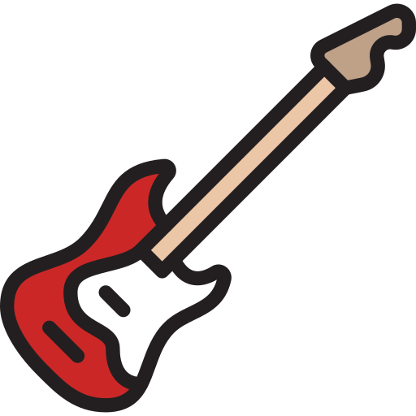

- Baterista - Ithalo Rodrigues
 Vocalista - Tales Rosendo
Vocalista - Tales Rosendo Guitarrista Base/Backing Vocal - Luis Antônio
Guitarrista Base/Backing Vocal - Luis Antônio- Guitarrista Solo/Backing Vocal - Tomaz Barros
- Baixista - Lucas Souza
Não apenas uma banda, mas uma experiência sensorial e curativa, reconexão de corpo e alma. A Doctor Kush vai fazer você sentir as melhores experiências que se pode sentir, redefinir a capacidade de assimilar o desejo mais forte de viver a vida.
Originalmente chamada de Soundtrip, a banda surgiu em 2016 como um hobby ou apenas uma oportunidade de nos juntarmos para fazer um som, sem muita pretensão, nunca passou pela cabeça que um dia esse projeto poderia tomar grandes proporções. Desde que foi fundada, a Soundtrip passou por muitas formações diferentes, integrantes saíram e retornaram, saíram novamente e retornaram novamente, alguns não... foi uma trajetória meio conturbada, mas nunca desistimos (isso jamais... talvez seja o segredo do sucesso, ainda não sabemos). Em 2020 a Soundtrip teve um incrível encontro de almas e após isso nosso crescimento foi exponencial, tocamos em alguns lugares que nunca imaginávamos que um dia poderíamos, e foi graças a vocês que nos acompanham. Mas nosso sonho, não vai e nem pode parar por aqui! Por isso, com todo o respeito e gratidão por tudo o que passamos juntos, encerramos um ciclo e damos início a um novo... É com muita alegria que anunciamos o nosso mais novo projeto: DR. KUSH.
Registro de algumas de nossas apresentações